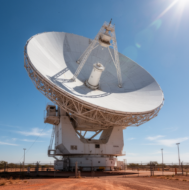

SPACE_MISSION: Security 3.0
Monitoraggio avanzato delle infrastrutture orbitali e meteorologia extra-atmosferica.
Sistema Radar Deep Space (DSN)
L'infrastruttura di monitoraggio qui rappresentata costituisce il cuore pulsante del Deep Space Network (DSN). Queste antenne paraboliche ad alto guadagno sono progettate per operare in bande di frequenza X e Ka, garantendo una precisione millimetrica nella localizzazione di corpi celesti e detriti orbitali.
Il sistema radar non si limita alla semplice ricezione passiva; esso invia impulsi elettromagnetici focalizzati che rimbalzano sugli oggetti target per calcolarne la velocità vettoriale e la traiettoria di impatto potenziale. Ogni stazione radar è dotata di un sistema di raffreddamento criogenico per i ricevitori, minimizzando il rumore termico e permettendo di captare segnali con potenze inferiori a quelle di un orologio digitale terrestre provenienti da miliardi di chilometri di distanza.

Analisi Video: Eventi CME e Vento Solare
Il monitoraggio visuale in tempo reale è gestito tramite il database DONKI (Space Weather Database Of Notifications, Knowledge, and Information). In questa sezione vengono visualizzate le riproporzioni digitali delle Espulsioni di Massa Coronale (CME) catturate dalle sonde SOHO e STEREO.
Le immagini video permettono agli analisti di determinare la "direzionalità" delle tempeste solari. Un'espulsione diretta verso la Terra può causare tempeste geomagnetiche capaci di interrompere le comunicazioni satellitari e le reti elettriche terrestri. Il video visualizza i flussi di plasma ionizzato che viaggiano attraverso il vuoto interplanetario, permettendo una stima visiva della densità protonica e della turbolenza del fronte d'urto.
Protocolli di Telemetria e Sicurezza
L'output sottostante rappresenta la sintesi computazionale di migliaia di sensori distribuiti. Il protocollo Security 3.0 integra algoritmi di intelligenza artificiale per filtrare i dati grezzi provenienti dai magnetometri orbitali.
Ogni riga della console è il risultato di una validazione incrociata tra le stazioni terrestri e i satelliti meteorologici. In caso di superamento delle soglie critiche di radiazione, il sistema attiva automaticamente le procedure di "Safe Mode" per la strumentazione sensibile della Stazione Spaziale Internazionale (ISS), garantendo l'integrità dei sistemi di supporto vitale per l'equipaggio.